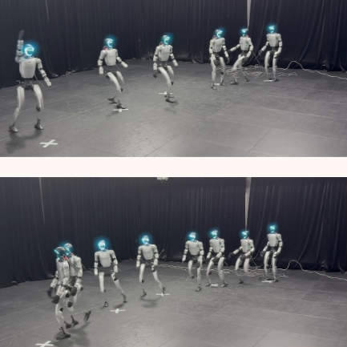
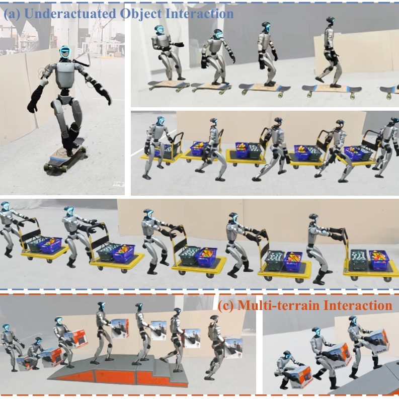

[Open] Welcome research collaborations on humanoid technique
I co-founded a cross-institute research group (member from 清华,上交,复旦,浙大,小米,etcs) in following topics:
Humanoid whole-body control
Interaction skill with object/scene
Multi-modal motion representation
We conduct a series of research for pushing the edge of humanoid, including HOSI, HIPC, HAIC and some on-going projects.
If you also aims to solve real-world problem and extend the tech boundary, feel free to reach me out, some positions are avaiable in both university and industry, I'm glad to recommend you involve in and offer assistance to support you.
Research
Particularly, I am interested in physical intelligence via spatial computing.

HIPC: Humanoid Iterative Planning and Control via Goal-conditioned Motion Closure Yi Han*, Xingyu Chen*, Zixuan Lang, Qianyang Wu, Yuhang Lin, Ji Ma, Liang Li, Dongting Li, Xinpeng Liu, Ruoli Dai, Hesheng Wang, Renjing Xu, Lei Han
Arxiv preprint, 2026
[project page][arXiv][code]
A humanoid planning and control framework for real-state motion closure.

HAIC: Humanoid Agile Object Interaction Control via Dynamics-Aware World Model
Dongting Li*, Xingyu Chen*, Qianyang Wu, Bo Chen, Sikai Wu, Hanyu Wu, Guoyao Zhang, Liang Li, Mingliang Zhou, Diyun Xiang, Jianzhu Ma, Qiang Zhang, Renjing Xu
Robotics: Science and Systems (RSS), 2026
[project page][arXiv][code]
A world model identifies the interaction dynamics during state-action feedback.